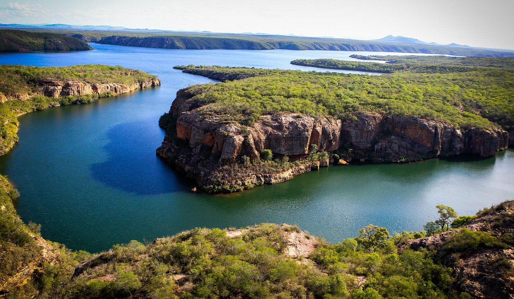

Sergipe é o menor estado do Brasil, localizado no Nordeste, com capital em Aracaju. O estado é conhecido por suas praias tranquilas, como Atalaia, Coroa do Meio e Santo Antônio, além das belezas naturais de suas áreas protegidas, como o Parque Nacional de Santarém. A cultura sergipana é rica em manifestações como o forró, o baião e o maracatu, além de ter um forte folclore e artesanato com destaque para peças em cerâmica e renda. O carnaval de Aracaju é um dos maiores eventos culturais do estado, reunindo foliões de todo o Brasil. A economia de Sergipe é bastante diversificada, com forte presença na agricultura, destacando-se na produção de caju, canade-açúcar e frutas tropicais. A pesca, especialmente de camarões, também é significativa, assim como o setor de energia, com investimentos em energia eólica. O turismo é uma das principais fontes de renda, com as praias e o ecoturismo no interior atraindo visitantes. Sergipe, com sua cultura autêntica, belezas naturais e clima tropical, oferece uma rica experiência tanto para moradores quanto para turistas.
